Mapping Party

Free Software Movement Karnataka
Camp 07.14
What's Mapping Party?
A mapping party is where a group of openstreetmappers and novices descend on an area to map it exhaustively.
Overview
- Introduction to Openstreetmap
- Introduction to Mapping
- Mapping using OSMTracker data
An Introduction to OpenStreetMap
What's OpenStreetMap(OSM)?
A Wikipedia-style platform for maps – open, transparent and editable by anyone with a desire to do so.
Started in 2004, its built by a community of mappers that contribute and maintain free geographic data of the entire planet through collaboration.
Why OpenStreetMap?
(When we have Google, HERE, Bing, and others!)
- Present Maps/Geodata isn't
- Free (as in Freedom)
- Open
- Emphasize local knowledge
- Wiki is obvious next step
- Its just
fun
Why do we need free Geodata?
- Free Geodata allows generating free AND cusotmized maps.
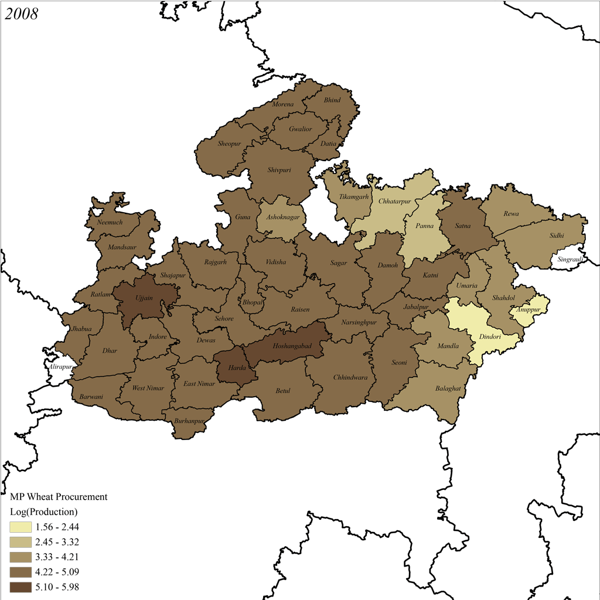
http://geohackers.in/2013/05/mapping-mandis
- With Visulisation..
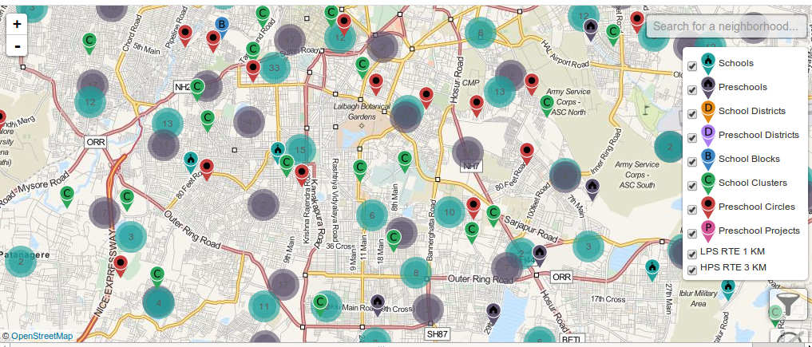
http://klp.org.in/map
- New Ideas and more.:)
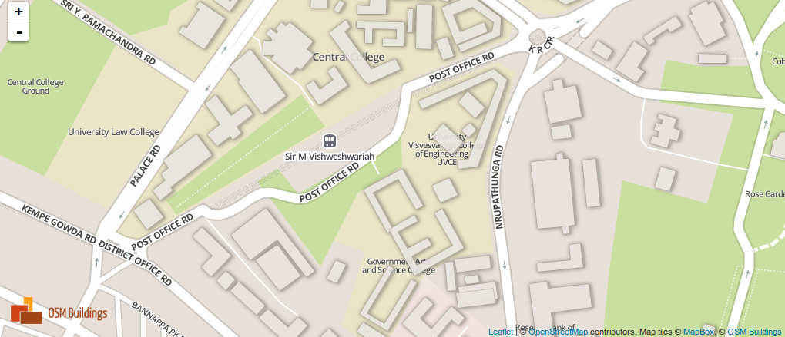
Growth of Project
Users: 2.2Million, GPS Points: 4.1Billion, Total Data: 400GB
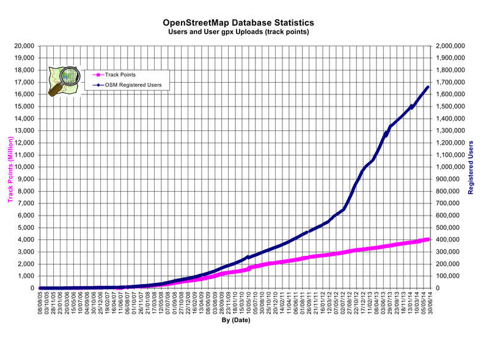
India Mapping
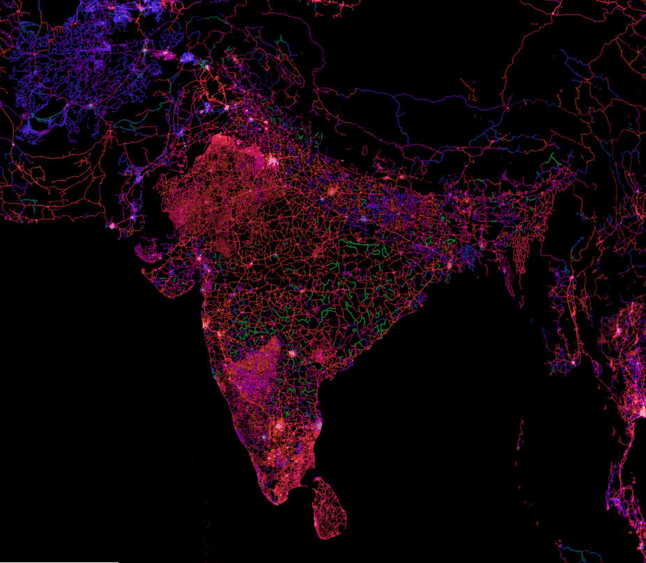
https://www.mapbox.com/osm-data-report/
Bangalore Mapping
In 2008
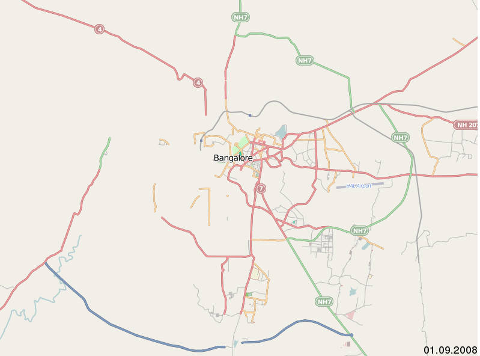
https://www.4thmain.github.io/projects/osm/bangalore-mapping.html
Bangalore Mapping
In 2014
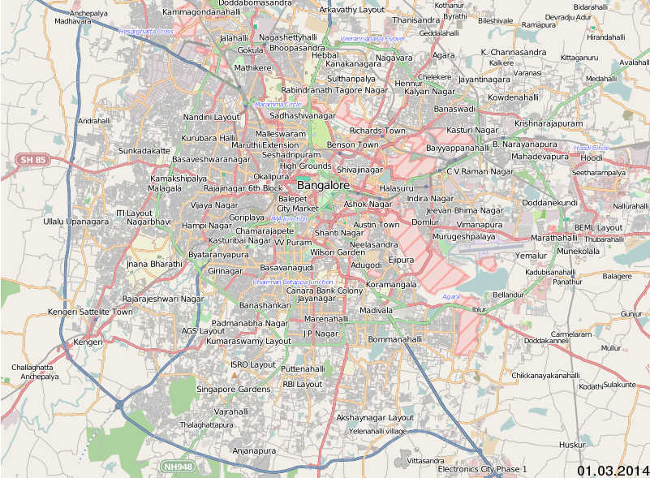
https://www.4thmain.github.io/projects/osm/bangalore-mapping.html/
What do I map?
- Anything that Physically Exists!
- Roads, trails, cafés, railway stations, buildings, lakes, etc.,.
- Start with your school or college or any place where you have been
- Take a look at the present mapping in India - http://wiki.openstreetmap.org/wiki/India
- Join HOT(Humanitarian OpenStreetMap Team) - Mapping for humanitarian response and economic development.
Introduction to Mapping
- What do we need?
- How do we do?
- How the OSM data is structured - Geometry and Tags.
And there are three ways of editing OSM -
- Using aerial imagery
- Using GPS data(*.gpx) from tracking apps through ground survey
- Importing existing geodata which is compatible with ODBl(Open Database License) to OSM.
What do we need?
- GPS enabled smartphone with tracking app for ground survey.
- Osm registered account.
- Tools to convert existing geodata if importing is to be done.
How do we do?
- Register and verify a account in osm.
- Use any of these popular GUI editors are:
- iD - web-based HTML5 editor(easy one)
- JOSM - Java based desktop editor(advanced editor)
- Poltach - Flash-based web editor(not commonly used now)
- Upload the data to OSM.
OSM Data Structure
- Geometry --
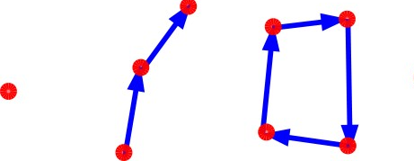
- Node(Point): Used for mapping Points of Interest(POIs). Ex: Cafe's, Shop, etc.,.
- Ways: Used for mapping Roads, Rivers, etc.,.
- Area: Used for mapping Regional boundaries, Buildings, Forests, etc.,.
- Tags --
- Represent how data is saved in OSM.
- They are a type of key-value pair
- Ex: amenity:cafe, name:Coffee day, landuse:forest, etc.,.
Mapping Using OSMTracker GPS data
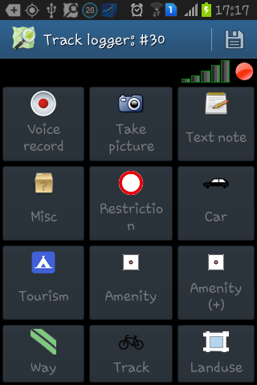
Install OSMTracker app(Available on Fdroid) to your GPS-enabled smartphone and turn on GPS
Start tracking by taking note or pic or voice rec.
Once the tracking is done, save it and export the track to gpx format
Copy the gpx file to the machine or upload directly to osm for editing.
Upload into your osm profile from the app
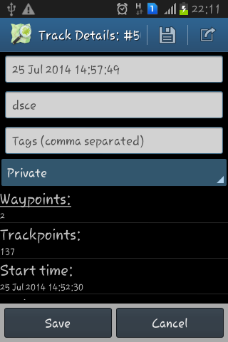
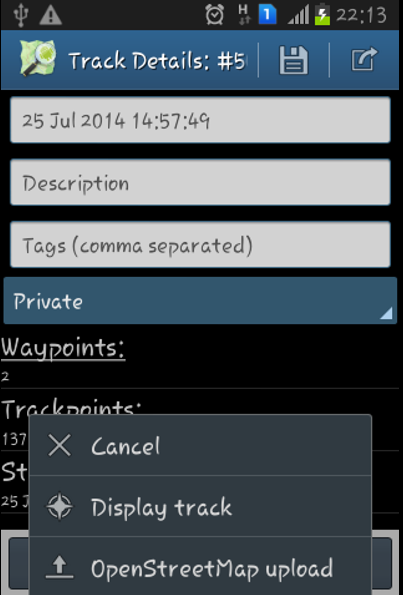
Starting Editing
Edit using iD
Tracks and notes are shown in pink
Trace the way and add proper nodes.
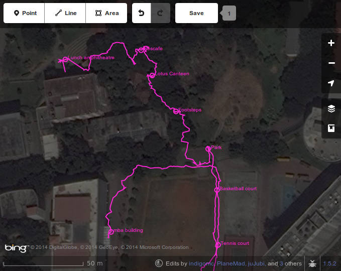
Exporting the data
Zoom to the area of map to be exported
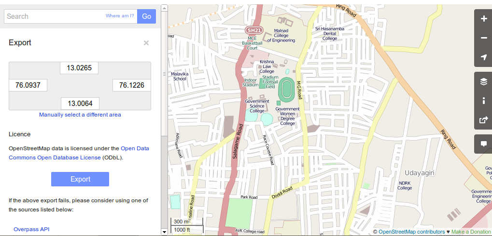
Learn More
Happy Mapping!!
Have Fun!!
Questions?
Credits
- Slides credit: Presentations of Will skora, Richard cantwell, Steve coast, David dean
- Slides made using Reveal.js
- Image credits: OSM Wiki and osm.org
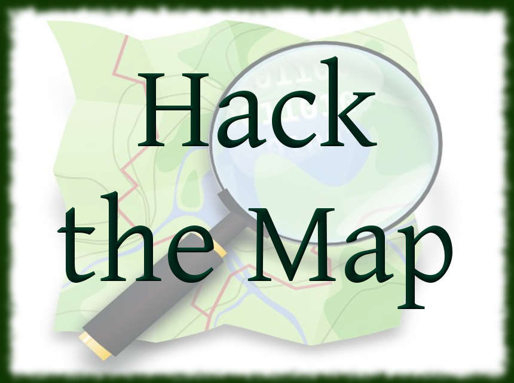